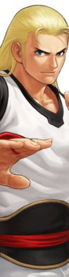
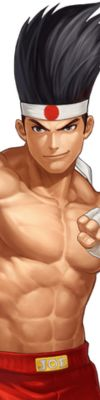
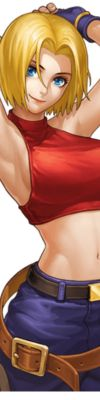
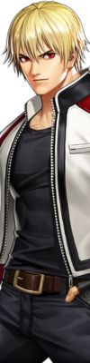
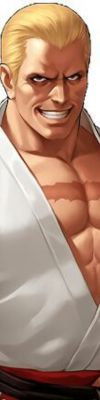
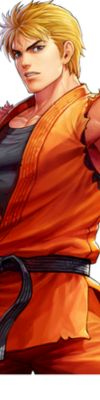
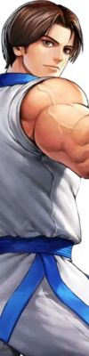
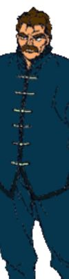

Terry Bogard
"Ei, vamos! É hora de falar sério! Este lobo lendário vai te mostrar o que fazer! TERRY BOGARD ." - O Rei dos Lutadores XV Terry Bogard é o principal protagonista da série Fatal Fury . Ele apareceu em todos os jogos Fatal Fury e King of Fighters , e é um dos personagens escolhidos para simbolizar a empresa em jogos crossover, mercadorias e publicidade . Ele parece se encaixar em muitos estereótipos japoneses para um personagem americano em aparência, personalidade e fala (seu vocabulário no jogo é geralmente limitado a coloquialismos americanos, como "Ok!" e "Ei, vamos, vamos!") .
Informações pessoais:
| Terry Bogard | |
|---|---|
| Nome Completo | Terry Bogard |
| Idade | 24 Anos - KOF 2002 |
| Local de nascimento | Estados Unidos |
| Altura | 1,82 |
| Peso | 83kg |
| Não gosta | Cigarros |
| Comida favorita | Sanduiches |
| Esporte | Basquete |
| Arma | Nenhuma |
| Estilo de Luta | Artes marciais e técnicas de Hakkyokuseiken chi |
Personagens relacionados:
Os personagens abaixo possuem algum tipo de ligação positiva ou negativa com Terry Bogard
| Selecione o Personagem | |
|---|---|
|  | AndyTerry e Andy foram adotados por Jeff Bogard, um mestre em artes marciais. Eles têm uma relação muito próxima e especial. A história deles é marcada por tragédia e superação. A relação entre Terry e Andy é baseada em um profundo laço fraternal, caracterizado pelo apoio mútuo, respeito e lealdade inabaláveis. Eles frequentemente lutam lado a lado como membros da equipe "Fatal Fury" ou da equipe "Art of Fighting" nos torneios "The King of Fighters", demonstrando sua confiança e união. |
|  | JoeTerry e Joe são amigos e parceiros de treinamento, além de colegas de equipe em muitas competições. Terry é geralmente retratado como o líder da equipe, enquanto Joe é o especialista em Muay Thai. Eles compartilham um forte laço de amizade e respeito mútuo, demonstrado através de suas interações nos jogos, nos quais frequentemente se apoiam e incentivam uns aos outros durante os desafios que enfrentam. |
|  | Blue MaryTerry e Mary compartilham uma ligação que vai além da amizade, embora não seja necessariamente romântica em todos os momentos, dependendo da interpretação dos fãs. Há insinuações ao longo da série de que Terry e Blue Mary têm sentimentos um pelo outro, mas a natureza exata de seu relacionamento muitas vezes é deixada ambígua e aberta à interpretação. Em alguns jogos e mídias relacionadas, eles são retratados como interessados romanticamente um pelo outro, enquanto em outros, sua relação é mais platônica, com um forte vínculo de camaradagem e respeito |
|  | Rock HowardDepois que Geese Howard é derrotado por Terry, Rock Howard é criado por Terry como seu próprio filho, em parte como uma forma de redenção pelo papel de seu pai na morte de Jeff Bogard, o mentor de Terry e pai adotivo de Rock. Terry assume a responsabilidade de educar e treinar Rock nas artes marciais, ajudando-o a superar as sombras do legado de seu pai e a encontrar seu próprio caminho. |
|  | Gesse HowardA relação entre Terry Bogard e Geese Howard é central para a trama da série "Fatal Fury" e influencia muitos eventos nos jogos da série "The King of Fighters". Geese Howard é frequentemente retratado como o principal antagonista e rival de Terry. Inicialmente, Geese é responsável pela morte do pai adotivo de Terry, Jeff Bogard, quando Terry e seu irmão Andy eram crianças. Esse evento traumático molda a vida de Terry e estabelece uma animosidade profunda entre ele e Geese. A busca de Terry por vingança contra Geese é um dos principais motivadores de sua jornada ao longo da série "Fatal Fury". |
|  | Ryo SakazakiEmbora Terry e Ryo sejam rivais nos torneios "The King of Fighters", sua rivalidade é baseada em uma competição saudável e em um desejo de provar quem é o melhor lutador. Eles se enfrentam em batalhas intensas e épicas, mas fora do ringue, há um profundo respeito e admiração mútuos entre eles. |
|  | Kim KapwanTerry e Kim são lutadores talentosos e respeitados em seus próprios universos. Eles reconhecem as habilidades um do outro e têm uma admiração mútua pela habilidade e coragem de cada um. Eles compartilham o compromisso de defender os fracos e lutar contra o mal, o que os une em uma causa comum além das competições. Fora do calor da batalha, Terry e Kim são amigos solidários, oferecem apoio moral um ao outro e compartilham momentos de camaradagem, fortalecendo ainda mais sua relação além das arenas de luta. São lutadores que lutam não apenas pela vitória, mas também pela justiça e honra. |
|  | Jeff BogardJeff Bogard era o pai adotivo de Terry e seu irmão Andy. Ele era um mestre em artes marciais e desempenhou um papel crucial em sua formação como lutadores. Jeff os treinou desde jovens, transmitindo-lhes não apenas habilidades de combate, mas também valores como coragem, honra e justiça. No entanto, a relação entre Terry e Jeff é marcada pela tragédia. Jeff é assassinado por Geese Howard, o principal antagonista da série, quando Terry e Andy eram crianças. Esse evento traumático tem um impacto profundo em Terry, alimentando sua busca por vingança e justiça ao longo da série "Fatal Fury". |